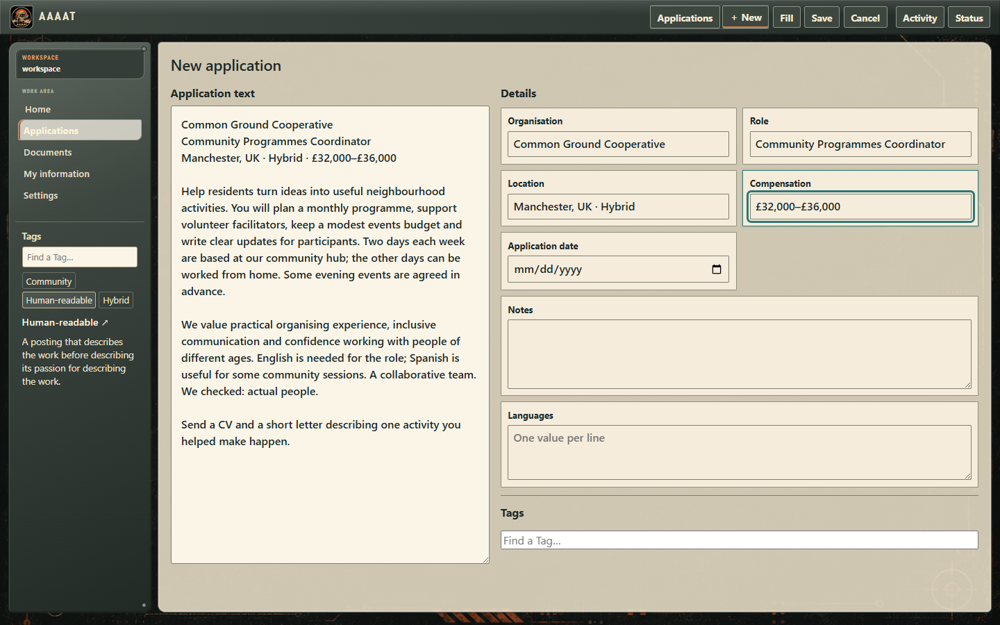
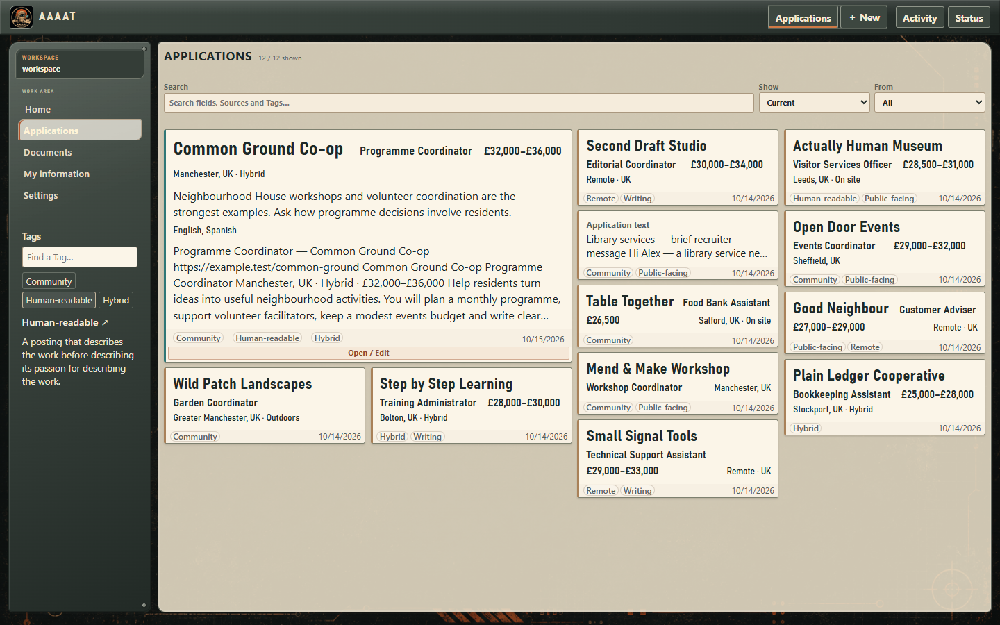
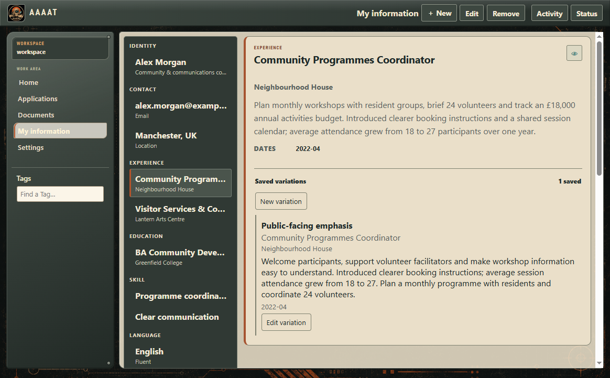
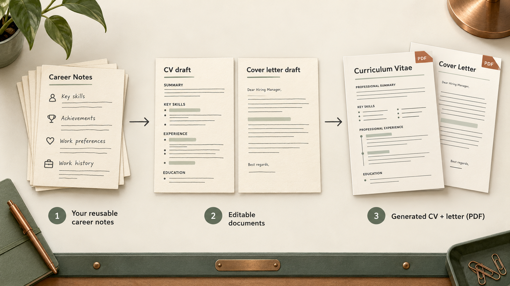
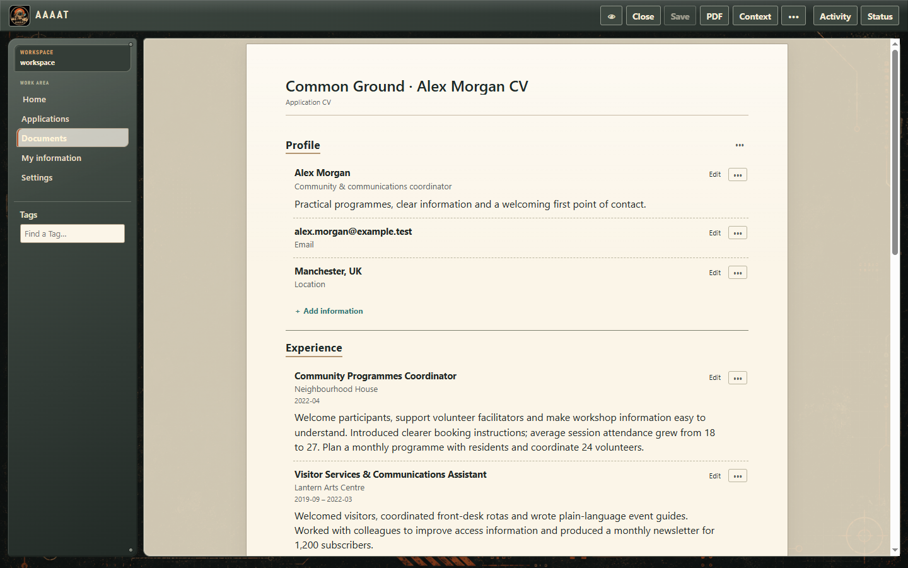
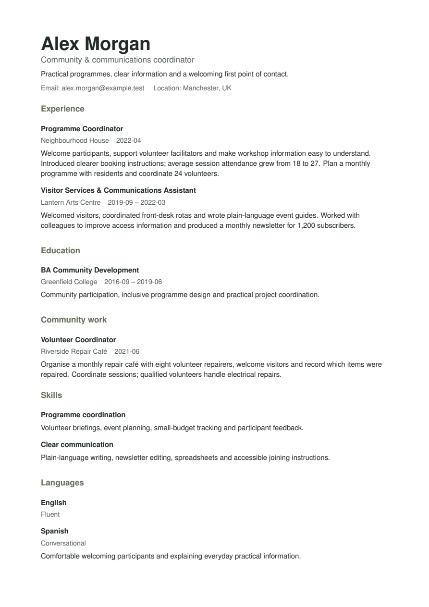
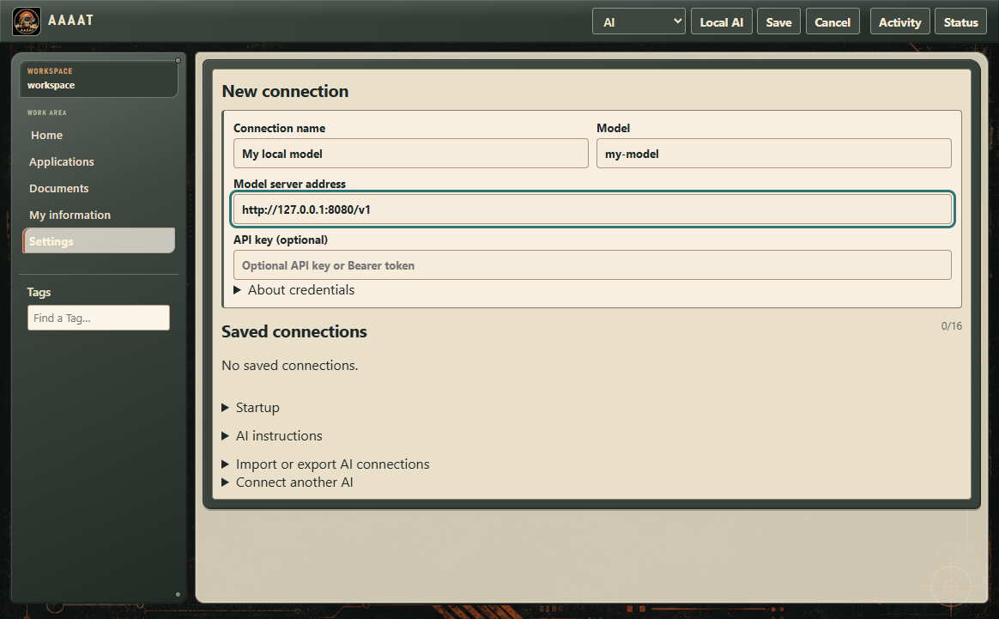
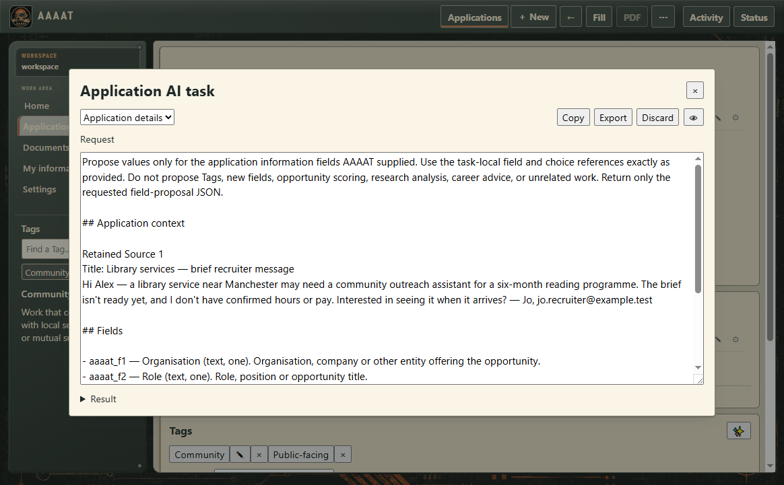
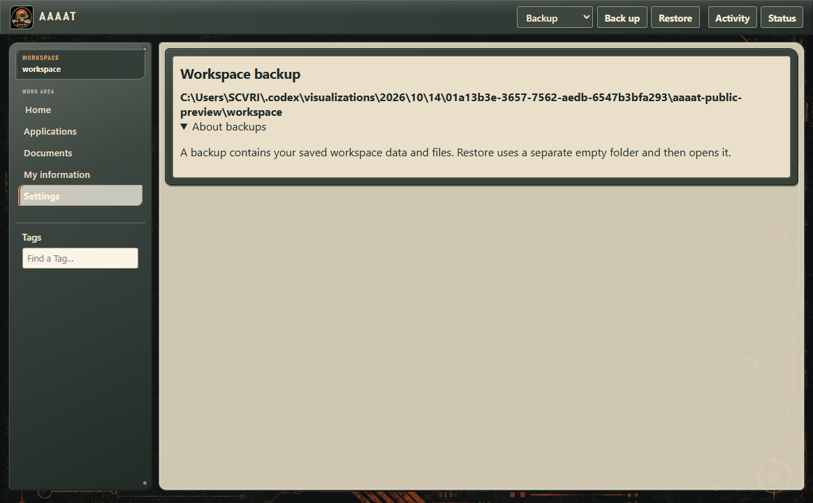

Explore AAAAT
More ways to make AAAAT yours.
Already comfortable saving opportunities and writing documents? Here's how to get more out of AAAAT, one feature at a time. You can use these whenever they become useful.
New to AAAAT? Follow the simple getting-started tutorial first.
Keep more than a job title.
When you save a job offer, the original text stays with the application. You can return to it alongside anything you learned from a recruiter, interviews or your own research.
- Open Applications and find the opportunity you want.
- Choose Open / Edit. Add useful details or notes, such as the recruiter's name, the interview location or a question you want to ask.
- Open its Sources to read the original offer or message again. Keep new notes without losing the original context.
- Save the information so it's there when you return.
Even a short note can be worth keeping. You don't have to complete a form or maintain an application stage.

Make important details stand out.
For one search, the job title and company might be enough. In another, salary, remote work or the type of contract may matter just as much.
- Open an application and look at the information you've saved.
- Use the star beside useful information to mark it as a favourite. Use the field settings when you want to change the order or how prominently that information appears on its cover.
- Return to Applications. Your cards now reflect what matters most to you.
You can also add a new kind of information if the initial fields don't cover your needs. For example, you might want to remember travel requirements, working hours or a specific certification.

Use Tags to remember what something means.
Tags help you group opportunities and keep useful explanations close by. For example, you could use a Tag for Hybrid, a technology, a certification or an industry.
- Open an application and find the Tags area.
- Type a Tag name. Select an existing one, or create a new one and give it a short, useful definition.
- Use the same Tag on another application. Its meaning stays consistent wherever you attach it.
- Back in Applications, select or focus a Tag on a cover to read its definition in the left-hand monitor.
You can include aliases or extra notes when they help, but a simple name and clear definition are enough to begin.
Reuse the experience you've already written.
My information is where you keep professional experience, projects, skills and education you expect to use again.
- Open My information and add an experience, skill or project. Write what you did in your own words.
- When you need the same experience presented differently, open the item and save another wording as a variation.
- When building a CV, choose the wording that best fits the job. Changing the CV doesn't mean you have to change your reusable information.
You can add your own information groups, too. AAAAT doesn't assume every profession needs the same categories.

Tailor your CV and cover letter.
One CV doesn't have to serve every opportunity. AAAAT lets you reuse career information while making each document say what you want.
- Open Documents. Under New CV from, choose My information or an existing template, then choose New CV.
- Adjust the text and sections for the opportunity. Move the most relevant experience forward and remove anything that doesn't help.
- Save the CV and choose PDF when it's ready. Open the generated file to check how it reads.
- For a letter, choose New letter from Documents, or open a particular application and create the documents there so they're easy to find together.
You can also produce a combined CV-and-letter PDF from an application. If you like reusing the same CV structure, save a CV template for future documents.



Let AI help with the repetitive parts.
If you'd rather not type details from a long job offer, AAAAT can ask a model you've chosen to help fill them. AI is optional: you can keep using AAAAT manually at any time.
- Open Settings → AI. Set up the optional local model or choose another compatible AI connection.
- Open Applications → New and paste a job offer into Application text.
- Choose Fill. AAAAT can suggest details from the posting and help recognize Tags.
- Read the result, adjust anything you want and save the application.
You can also request AI help while editing fields, CVs and letters. You choose what AAAAT is allowed to share with your configured AI.

Bring another LLM into your work.
You can also work with a text-capable LLM you already use—even if it has no built-in AAAAT integration.
- Open the application you want to work on and choose ⋯ → AI task.
- Read the prepared request. Change the instructions or remove any information you don't want to share.
- Choose Copy and paste the text into your chosen LLM. Read its answer before using it.
- Keep anything useful by adding it back to the application or document in AAAAT.
This copy-paste route works without a special plugin or API key from AAAAT. The external AI service's own terms still apply. Connected options are available for compatible hosts if you want to explore them later.

Back up the work you've kept.
Your applications, career information and saved documents are in a local workspace folder. Once you start using AAAAT regularly, keep a backup.
- Open Settings → Backup.
- Choose to create a backup and select a separate destination folder.
- Keep the backup somewhere safe. If you ever need it, use the restore option to open it into a new empty folder.
AI connection setup can be exported separately under Settings → AI. You don't need to configure AI to back up your work.

Want every control explained?
The full user guide goes deeper. You'll also find installation help and the story of how AAAAT is developed.